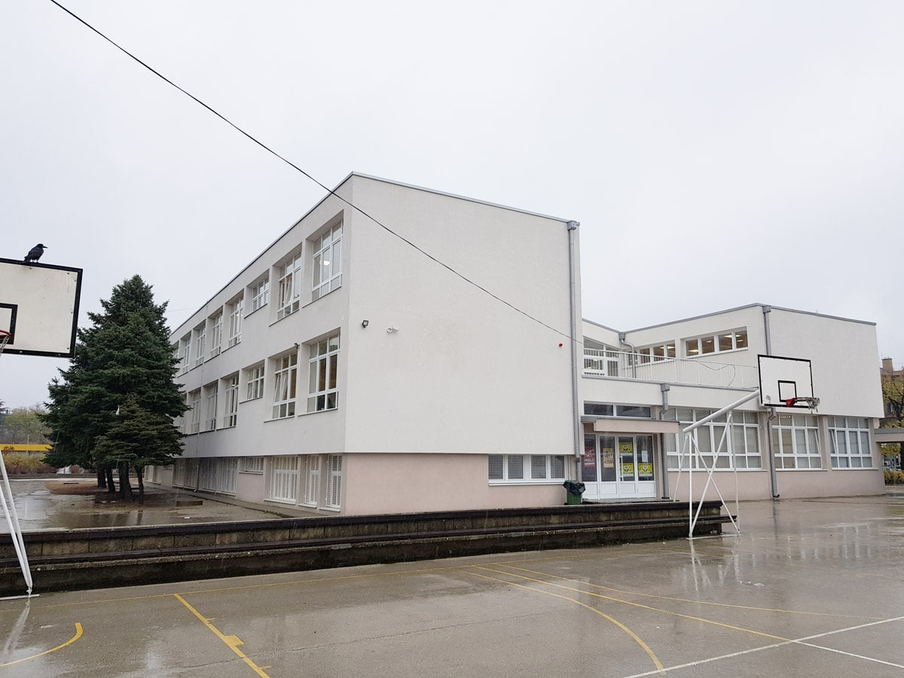
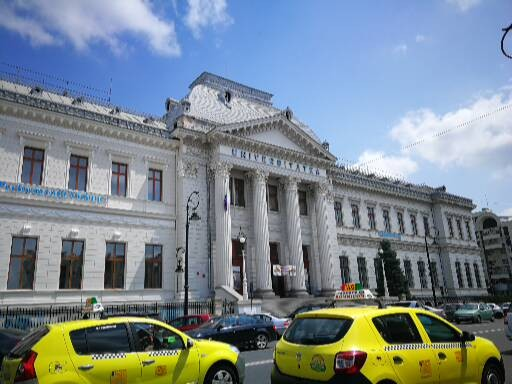
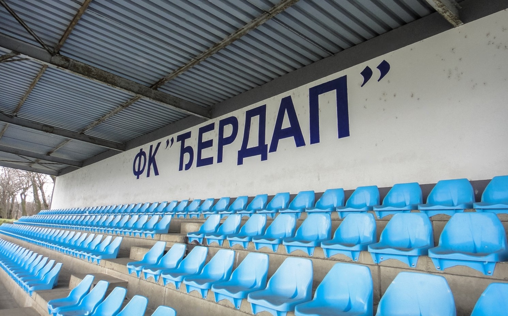
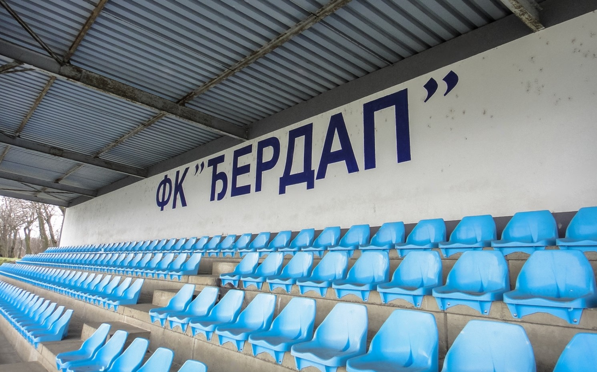

Nikola Bondokic
Informatii de baza despre persoana:
Nume:
- Bondokic
Prenume:
- Nikola
Data nasteri:
- 19.10.2000.
Inaltime:
- 1.70cm
Greutate:
- 80kg


Micul Nikola
In copilarie, Nikola era un baiat blond, rautacios, caruia placea sa aiba o multime de jucarii.
Era volubil dar si un baiat cumsecade, ascultator si stia ce inseamna cu adevarat parintii lui, ori de cate
ori parintii spuneau ceva, el a ascultat ce spuneau parintii lui. Ii placea sa aiba jucarii, ceea ce si-a avut,
parintii ii cumparau mereu ceva nou pentru a-l linisti. Alaturi de el, desigur, il are pe fratele sau Marko,
cu care a petrecut mult timp afara jucand fotbal, tenis sau orice alt joc de copii. In copilarie, nu a avut multi
prieteni, doar cativa vecini cu care a stat mereu. Au petrecut timp jucandu-se cu jucarii sau cu niste jocuri sociale.
Nikola iubea fotbalul de mic, motiv pentru care a inceput sa se antreneze. A jucat fotbal in fiecare zi, in mod constant,
fara sa oboseasca. Asa a inceput sa calatoreasca. Cu ajutorul fotbalului, a calatorit pentru prima data in
Austria si Bosnia si Hertegovina. A cunoscut multi prieteni noi, unii din Serbia, altii din Franta, Austria...
Scoala elementara
Scoala elementara a terminat in orasul sau natal, Kladovo.
Scoala elementara a durat 8 ani, timp in care si-a facut noi prieteni si prin care a invatat in primul rand literele si
cifrele si mai tarziu lucruri mult mai complexe. Nu a avut probleme cu prietenii, s-a inteles cu toata lumea si nu
s-a certat niciodata. Materiile lui preferate au fost: Biologie, Sport si Istorie. Ca elev, a avut note bune si s-a
descurcat intotdeauna bine la scoala. A fost idolul unor profesori, pe care i-a cucerit prin buna purtare.



Liceu
Liceu a terminat in Kladovo, orasul in care locuieste.
Liceul a fost ceva nou si interesant pentru el. La inceput, liceul parea foarte greu, dar cu timpul a stapanit toate materiile
si totul a devenit mai usor. In liceu s-a intalnit cu multi prieteni noi si, de asemenea, se intelegeau foarte bine si Nikola
era in cea mai buna clasa a acelei generatii. Liceul a durat 4 ani, dar in acea perioada Nikola a invatat multe lucruri noi,
a cunoscut si ceva nou si asta este programarea, de care a devenit interesat. De atunci, Nikola a inceput sa se familiarizeze
cu ceva dificil, dar interesant pentru el, i-a placut si a inceput sa invete. Pe care l-a continuat mai tarziu la Facultate.
La sfarsitul liceului, a primit diploma, dar Nikola a vrut sa studieze mai departe, asa ca s-a inscris la Facultatea.
A vrut sa invete programarea, asa ca sa inscris la Facultate de Informaita. Pe langa fotbal, acesta este un alt lucru care a
inceput sa-l intereseze foarte repede.
Facultate
Facultate a inscris in strainatate, adica in Romania. Inca studiaza
la universitate, dar va termina in curand, dupa care se va angaja. S-a inscris la facultate din dragoste pentru programare, ceea
ce l-a atras. Pentru Nikola, facultatea este un nou capitol din viata lui care a schimbat multe lucruri pentru el. Modul de viata
si felul in care trateaza oamenii, pana la modul in care Nikola se descurca singur intr-o tara straina, a schimbat si faptul ca
Nikola a inceput sa calatoreasca mult cu trenul, ceea ce nu facuse pana acum, dar i-a placut mult. . La inceputul Facultatii,
Nikola era rezident intr-o tara pe care nu a cunoscut-o pana atunci, dar de-a lungul timpului a cunoscut o multime de prieteni
noi si a cunoscut si tara in sine. La facultate a acumulat multe cunostinte noi si a cunoscut multi profesori noi. La inceput,
facultatea parea foarte dificila, nu din cauza materialului, ci din cauza situatiei care a prins lumea si adica COVID-19.
Aceasta boala l-a ingreunat pe Nikola sa studieze si orice altceva, totul a devenit mai usor cand scoala a inceput cu fata
in fata si cand Nikola a cunoscut lucruri noi pentru prima data, care i-au placut.
UCV Craiova
Str. A. I. Cuza nr.13,
Craiova,
Romania


Ce as vrea sa fac dupa Facultate ?!
Jobul meu de vis pe care mi-as dori sa il fac este sa fiu dezvoltator de site-uri web
In copilarie, mi-am dorit mereu sa fiu fotbalist, dar asta s-a schimbat in timp cand am inceput sa studiez
la scoala si cand am cunoscut programarea. Dragostea mea pentru programare a crescut si a crescut doar cand
am inceput sa invat mai multe despre design web si despre crearea de site-uri web. Mi-a placut foarte mult asta
si am inceput sa invat mai multe despre asta, am inceput sa exersez si sa-mi creez propriile site-uri web pentru
a exersa si a deveni un programator mai bun. Cand termin facultatea, vreau sa devin un adevarat dezvoltator web
si sa lucrez intr-una dintre companiile care se ocupa de ea. Mi-ar placea sa invat cum este sa lucrezi in echipa
si cum este sa faci proiecte mari si importante.
Mi-a placut atat de mult sa programez si sa creez site-uri web, incat ma duceam intr-o alta tara pentru munca, ca sa
pot lucra pentru una dintre companiile mai mari. As dori sa cunosc multi prieteni noi carora le place sa creeze site-uri
web, astfel incat sa ne putem impartasi cunostintele unii cu altii.
Fotbal
M-am indragostit de fotbal inca de mic. Cand am vazut prima data un fotbalist pe teren,
mi-am dorit imediat sa fiu acolo. Imediat dupa acel moment, le-am rugat parintilor mei
sa ma inscrie la fotbal in echipa mea locala, "FK ĐERDAP". Bineinteles ca m-au inscris
parintii si am inceput imediat sa ma antrenez. Mi-a placut foarte mult fotbalul ca joc
si am cunoscut noi prieteni. Am fost la fiecare antrenament si fotbalul a fost prima mea
"iubire". Cu ajutorul fotbalului am inceput sa calatoresc in alte tari precum:
Bosnia si Hertegovina, Austria, Romania. Mi-a placut foarte mult faptul ca pot calatori
cu ajutorul fotbalului si pot face ceea ce imi place. Dupa ceva timp, mi-am dorit ca asta
sa devina munca vietii mele si sa fac asta in fiecare zi. Am fost foarte fericit in timp
ce ma antrenam si jucam meciuri cu echipa mea. Am jucat la diverse categorii de la mici
pionieri pana la prima echipa a clubului orasului. Din pacate, de-a lungul anilor,
clubul s-a prabusit si nimeni nu a mai vrut sa se antreneze. Am fost si capitanul echipei
cativa ani, pana in momentul in care a trebuit sa aleg intre scoala si fotbal, ceea ce
nu mi-a placut deloc. Mi-a fost foarte greu sa aleg, dar am ales scoala pentru ca era
sigur pentru mine. Cu fotbalul, nu eram sigur daca va locui in orasul nostru si daca voi
reusi cu el. Odata cu alegerea scolii, mi-am luat ramas bun de la fotbal si de la antrenor.
Nu am avut timp de antrenament, dar inca joc fotbal in timpul liber cu prieteni mei.
Calatorii
Nu prea am calatorit in copilarie, dar cand am crescut am inceput sa calatoresc mult,
atat cu parintii, cat si cu prietenii. De asemenea, cand m-am inscris la facultate in
strainatate, am inceput sa folosesc foarte mult trenul ca mijloc de transport, ceea ce
mi-a placut foarte mult si a fost ceva nou pentru mine. Nu am calatorit in intreaga lume,
dar am calatorit in multe tari, bineinteles ca nu m-as opri aici, mi-ar placea sa calatoresc
mult mai mult ca sa cunosc oameni noi si sa vad o tara noua. Am calatorit o data cu avionul,
ceea ce as vrea sa fac din nou si sa merg putin mai departe de data aceasta intr-o tara noua
in care nu am mai fost pana acum. Visul meu este sa merg in Dubai, ceea ce sper sa devina realitate.
Text general
Ca orice baiat, imi plac masinile si automobilul din lume. In copilarie mi-am dorit
intotdeauna sa merg la salonul auto unde pot vedea toate cele mai prestigioase si mai
noi modele de masini. Masina mea preferata este Range Rover Evoque pe care mi-am dorit
intotdeauna sa-l detin. Desigur, exista multe super-masini pe care mi-as dori sa le detin,
dar tot cred ca este prea mult pentru mine. Cat despre muzica, ascult orice tip și nu
am nicio problema sa ascult piese straine. De asemenea, Imi place sa ma uit la filme mai
mult decat sa citesc carti, asa ca petrec mult timp la cinema.


 
